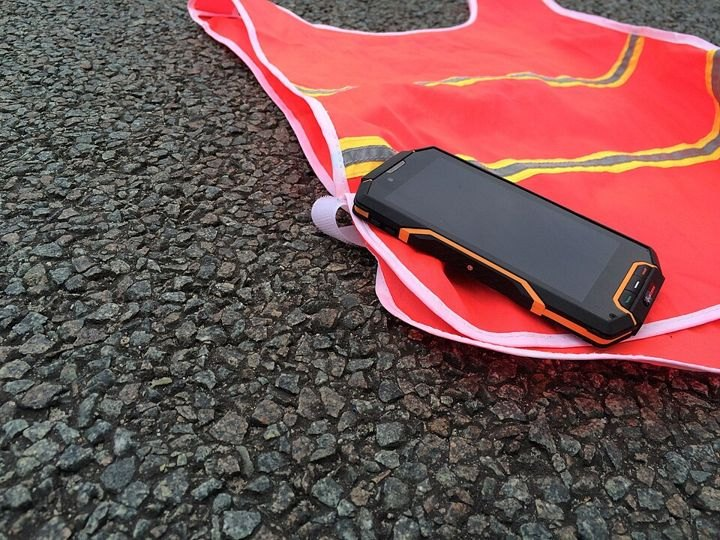
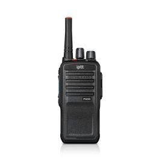
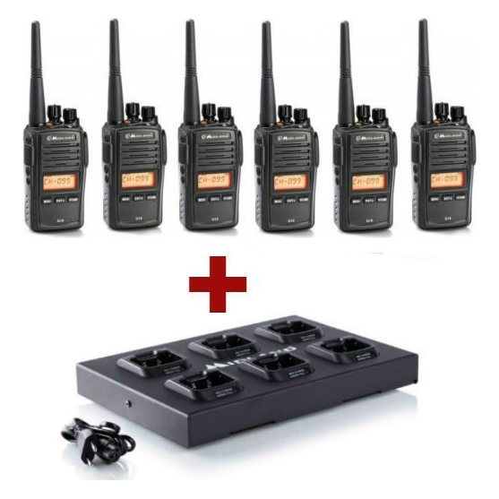
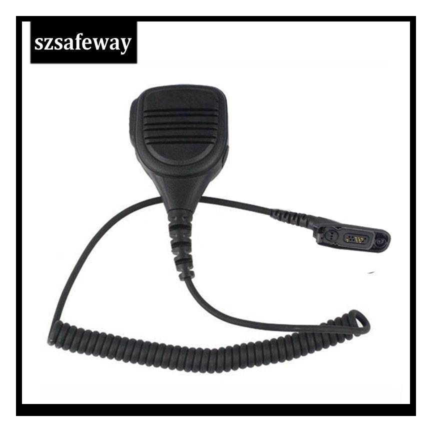
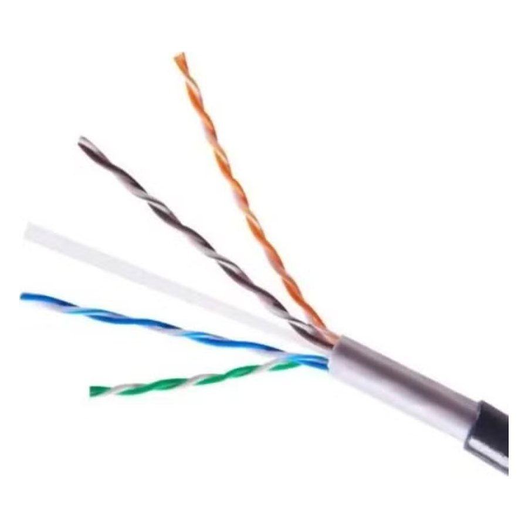

Start / Kommunikation / DMR446-Digitalfunkgerät (lizenzfrei, Handfunkgerät)

Abbildung ähnlich – zeigt den Produkttyp.
Kommunikation
DMR446-Digitalfunkgerät (lizenzfrei, Handfunkgerät)
Lizenzfreies digitales Handfunkgerät mit klarer Sprache bis zum Rand der Reichweite, auch bei Maschinenlärm.
Wie PMR446 ist es in Deutschland ohne Antrag und Gebühr nutzbar, wenn die Antenne fest verbunden ist und höchstens 0,5 W ERP gesendet werden; DMR-Tier-II-Geräte in lizenzpflichtigen Bändern brauchen dagegen eine Frequenzzuteilung der Bundesnetzagentur. Ein Profigerät bietet IP67, Display mit Kanal- und Gruppenanzeige, Gruppen- und Einzelruf sowie einen Headset-Anschluss.
Technische Daten
| Standard | DMR Tier I (ETSI TS 102 361) |
|---|---|
| Frequenzbereich | 446.0-446.2 MHz |
| Kanäle | 16 |
| Sendeleistung | max.; 0.5 W ERP |
| Betriebsart | digital + analogue |
| Schutzart | IP67 (typical) |
| Akku | Li-ion, 2000-3000 mAh (typical) |
| Zolltarifnummer (HS) | 85176200 |
EU-Normen und Vorschriften
RED 2014/53/EUFunkanlagenrichtlinie (CE-Kennzeichnung für Funkgeräte)ETSI TS 102 361-1DMR-Luftschnittstelle (Digital Mobile Radio)EN 301 489-1 / -5EMV für Funkeinrichtungen und private Landfunkgeräte (PMR)EN 62368-1Sicherheit von Audio-, Video-, Informations- und KommunikationstechnikEN 50566 / EN 62209-1Exposition durch handgehaltene und körpernah getragene Funkgeräte (SAR)EN 60529Schutzarten durch Gehäuse (IP-Code)2011/65/EU (RoHS)RoHS-Richtlinie, Stoffbeschränkungen in Elektrogeräten(EU) 2023/1542EU-Batterieverordnung
Passt dazu


Weitere Produkte dieser Kategorie

Tiantong-/BeiDou-Satellitentelefon (nur Asien-Pazifik)

Outdoor-Smartphone mit Satelliten-Sprach- und TextnachrichtenRobustes 5G-Smartphone mit Satelliten-Sprach- und Textnachrichten für Einsätze ohne Mobilfunk, jedoch ohne globale Abdeckung.

Satelliten-Messenger (Iridium SBD, GNSS)Kompaktes Zwei-Wege-Messaging-Gerät über das Iridium-Netz für Alleinarbeit und Einsätze ohne Mobilfunk, ohne Sprachfunktion.

PMR446-Handfunkgerät (lizenzfrei, Baustellenfunk)Lizenzfreies analoges Handfunkgerät für die Verständigung zwischen Bauleitung, Kolonne und Maschinenführer auf der Baustelle.

4G/LTE-PoC-Netzfunkgerät (Push-to-Talk über Mobilfunk, SIM-Karte)Handfunkgerät, das über das Mobilfunknetz funkt und mehrere Baustellen und Standorte unabhängig von der Funkreichweite verbindet.

Outdoor-Smartphone mit SatellitennachrichtenRobustes 5G-Smartphone mit Satelliten-Messaging für Bauleiter und Kolonnenführer, die auch auf Baustellen ohne Netz Notnachrichten senden können sollen.

Mehrfach-Ladestation 6-fach für Handfunkgeräte (Tischladegerät, Li-Ion)Tischladestation mit sechs Schächten für Li-Ion-Handfunkgeräte, modellspezifische Aufnahmen, Netzteil mit Wechselstecker.

PMR446-Funkgeräte-Set robust IP67, 6er mit 6-fach-Ladestation (Headsets optional)

Lautsprechermikrofon mit PTT für Handfunkgeräte (modellspezifischer Stecker)Schultermikrofon für Funkgeräte mit Sprechtaste.

Outdoor-4G-LTE-Router mit SIM-Slot und PoE (Cat4, 300 Mbit/s)Wetterfester LTE-CPE für Baustellen- und Ferienobjekt-Internet.

Wi-Fi-6-Deckenaccesspoint mit PoE (Dual-Band, 1.500 Mbit/s)Unauffälliger PoE-Access-Point für Büro, Hotel und Praxis.

4K-USB-Konferenzkamera mit Autofokus (EPTZ)USB-3.0-Raumkamera für Meetingräume.

Cat6-Patchkabel RJ45 (UTP/S-FTP, 3 m)Netzwerk-Patchkabel für Büro und Rack.

Akku-PA-Trolley-Lautsprecher 15 Zoll mit BluetoothMobile Beschallung für Events, Schulungen und Baustellen.

PoE-Switch 8 Port Gigabit mit SFP-UplinkPoE-Switch für Kameras, Access Points und VoIP.

4G-VoLTE-Tischtelefon mit SIM (Festnetzersatz)SIM-Telefon für Orte ohne Festnetzanschluss.